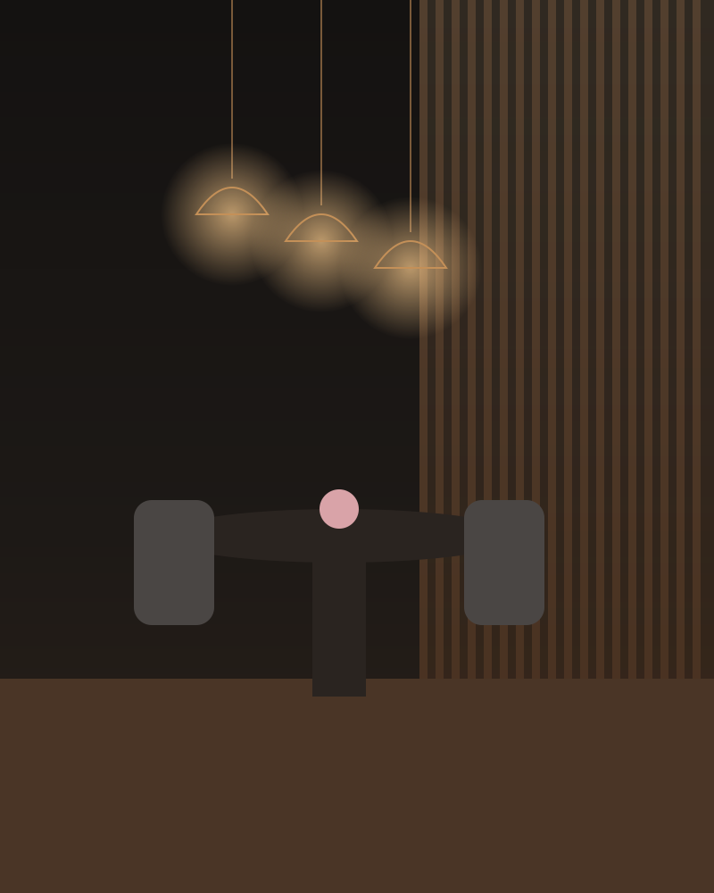
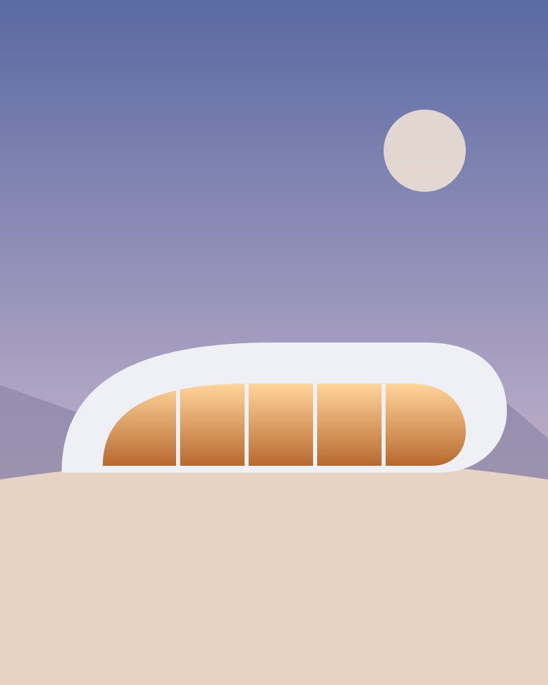
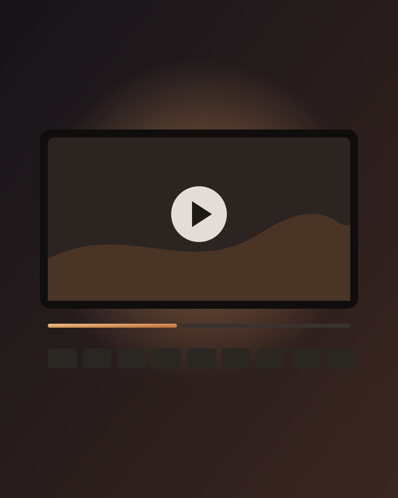

UI/UX · Investigação
UI/UX Multimédia Acessibilidade
Sou o João Mendo, designer UI/UX e estudante de Mestrado em Tecnologia e Multimédia na UTAD. Desenho produtos digitais centrados nas pessoas — claros, acessíveis e com intenção.

02 — Projetos
UI/UX · Investigação

Web · Multimédia



Vídeo · Comunicação

Investigação · Acessibilidade
03 — Sobre
Sou estudante de Mestrado em Tecnologia e Multimédia na Universidade de Trás-os-Montes e Alto Douro, licenciado em Multimédia pelo Instituto Politécnico de Bragança.
Como Bolseiro de Investigação no projeto A-MoVeR trabalhei em design de interfaces, prototipagem, produção multimédia e comunicação digital. Interessa-me sobretudo o design centrado no utilizador, a acessibilidade e a usabilidade — e sou autor principal de uma publicação sobre a aplicação de Inteligência Artificial à acessibilidade digital.
04 — Percurso
–
A-MoVeR · Vila Real
UI/UX de soluções digitais para mobilidade elétrica, website do projeto, vídeos promocionais, redes sociais, newsletters e apoio à identidade visual.
–
Câmara Municipal de Mirandela
Redesign do website institucional de turismo com foco em UX, conteúdos para presença digital e materiais gráficos promocionais.
Verões 2021 – 2023
Salesianos de Mirandela
Planeamento de atividades e gestão de grupos de crianças e jovens: liderança, comunicação e trabalho em equipa.
– atual
Universidade de Trás-os-Montes e Alto Douro
–
ESACT — Instituto Politécnico de Bragança
Formação A-MoVeR · híbrida
· Intelligent Systems Conference
João Mendo, Joana Oliveira, Tiago Pinto, Tânia Rocha
05 — Serviços
Investigação com utilizadores, arquitetura de informação, wireframes e protótipos de alta fidelidade em Figma — com acessibilidade desde o início.
Websites, vídeos promocionais e conteúdos audiovisuais que comunicam com clareza em todas as plataformas.
Identidade visual, materiais promocionais e conteúdos para redes sociais e newsletters, coerentes em cada ponto de contacto.
06 — Contacto
Procuro oportunidades em UI/UX e Multimédia. Tem um projeto ou uma vaga em mente? Escreva-me.